Rendered at exact panel pixels by tools/render_png.py from object dumps recorded while running the real tsp/serial_ui.tsp. Shown here at 1:1; the files are 2x.
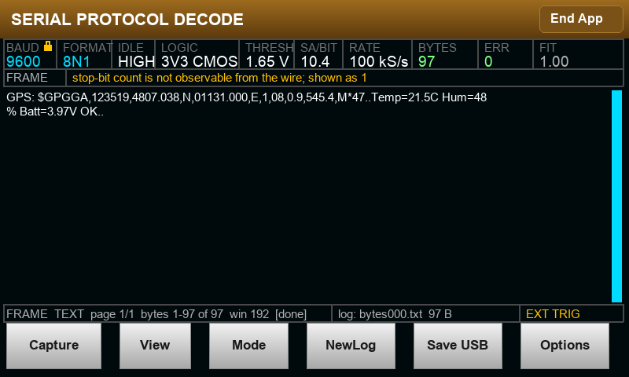
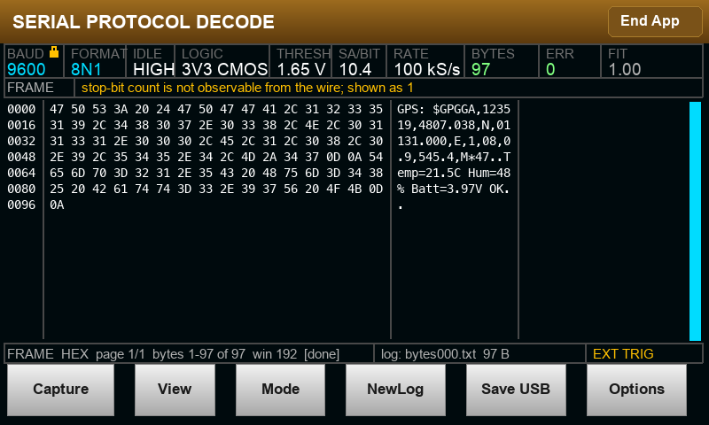
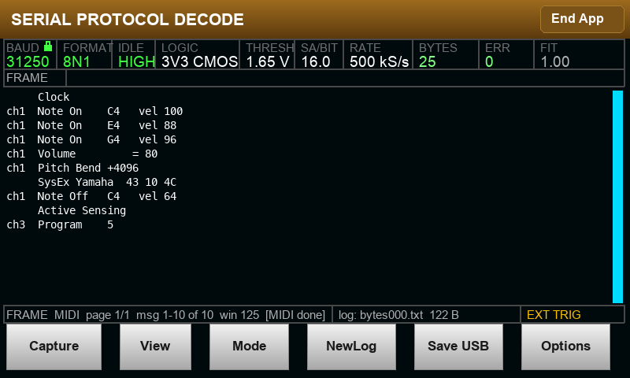
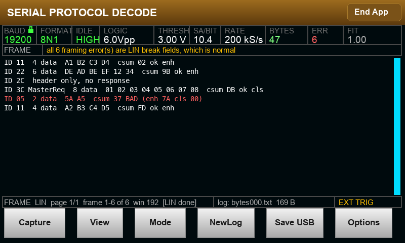
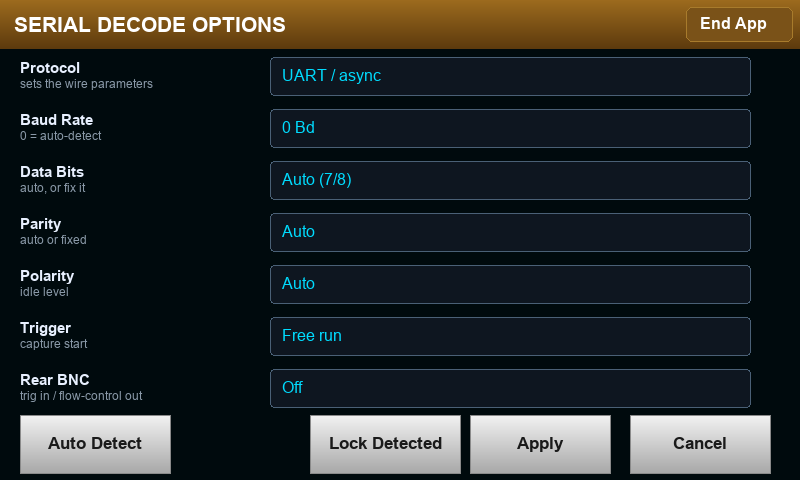
Ext Trig In tickedOrthogonal to the Trigger field above it: ticked, the rear BNC starts a capture in addition to the selected source, via the trigger blender's OR. Off by default — the app must work with one probe and nothing else attached.
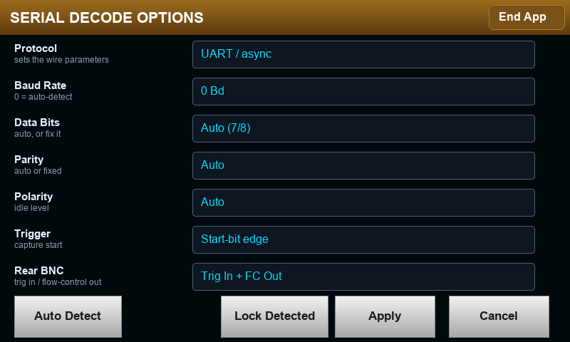
Drawn from rects (the panel font has no padlock glyph), in the gap after the BAUD label. Green = the operator pinned the wire parameters, amber = the app worked them out, red = nothing decoded, so there is nothing to lock. The three lockable values carry the state as a colour too.
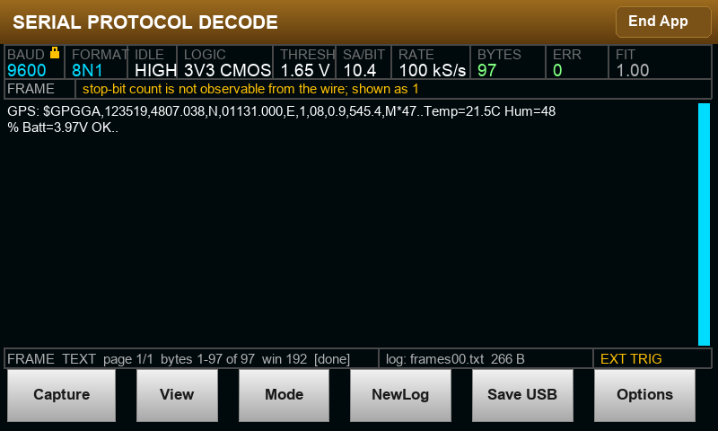
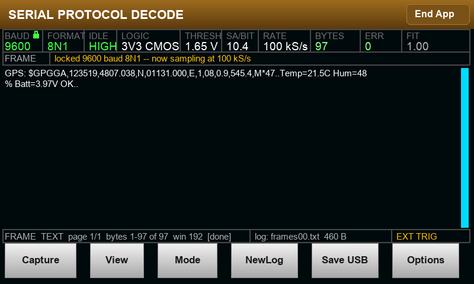
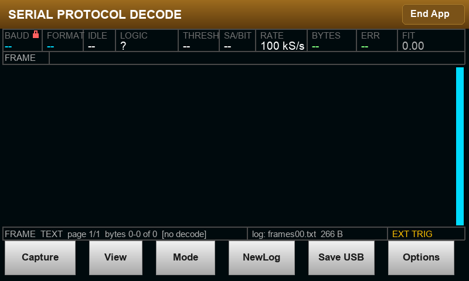
The default (start-bit edge on the signal itself) says nothing. Anything that can wait for something external names itself in the status row's right-hand cell and turns it amber — because a capture waiting on an edge that never arrives is otherwise indistinguishable from a hang.
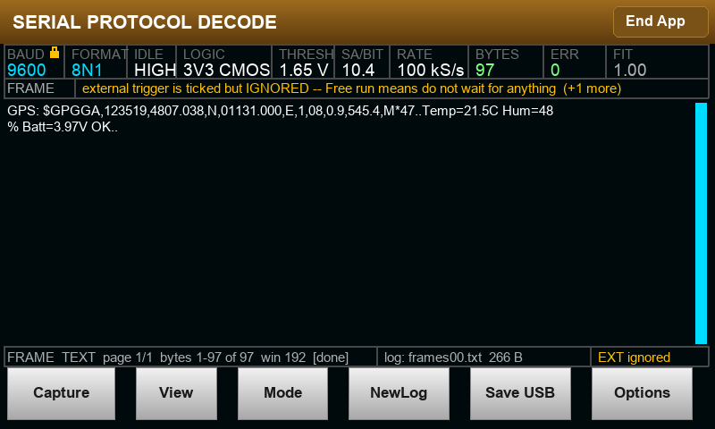
Mode cycles FRAME / 32 kB / STREAM. The MODE cell top-left is coloured per mode — grey, amber, green — which is the at-a-glance channel; the status row names it in words. Capture starts all three and is Stop while one runs; Mode aborts and returns to FRAME, flushing files.
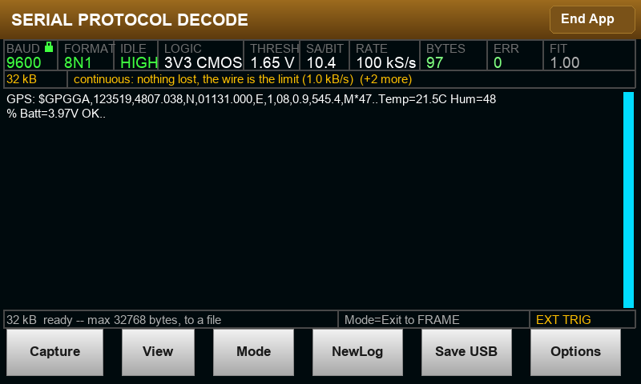
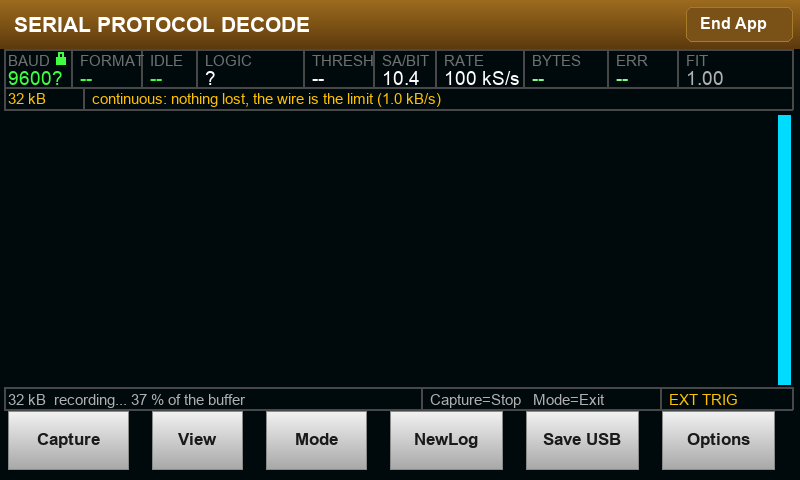
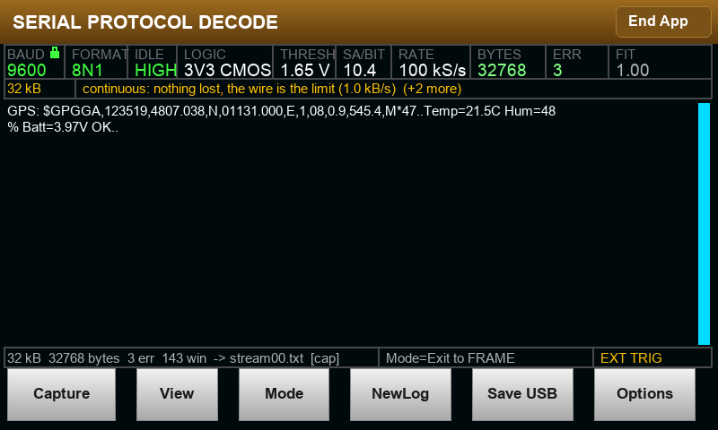
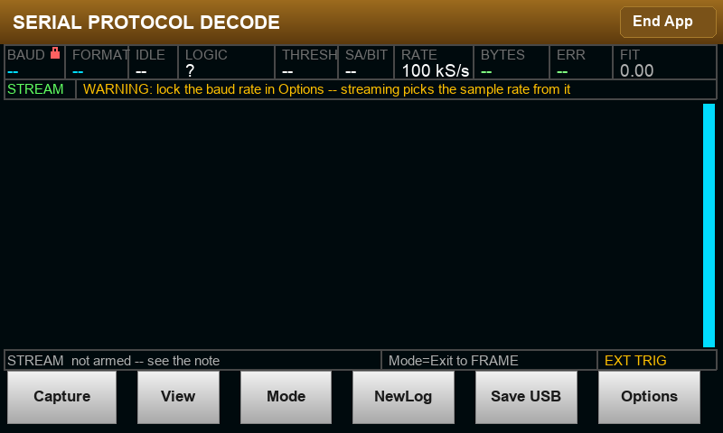